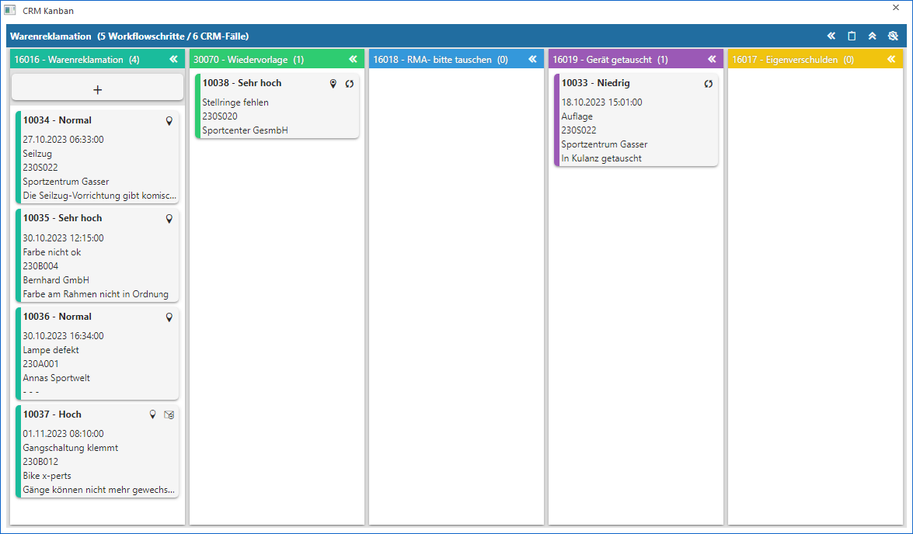
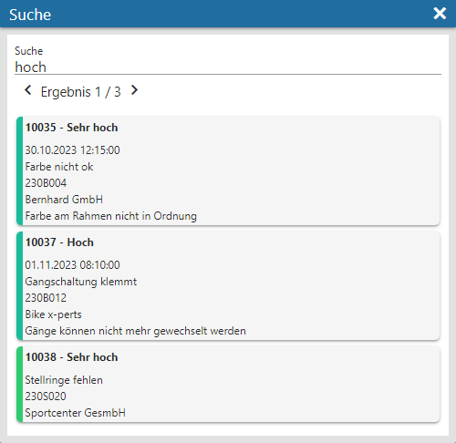

Der CRM-Kanban ermöglicht es den Status von CRM-Fällen in einer graphischen Ansicht (per Drag & Drop) zu verändert, d.h. einen neuen Schritt zu schreiben. Der Aufruf erfolgt per Button "Ausgabe Kanban" im List - Assistent oder der List - Ausgabe.
Hinweis
Die Basis der Ausgabe, d.h. der in der Folge darstellten CRM-Fälle, ist immer eine WinLine LIST-Liste des Typs "16 - CRM Workflows" oder "18 - CRM Workflows und Aktionen".

Der CRM-Kanban ermittelt sich auf Grundlage der WinLine LIST-Liste nicht nur die darzustellenden CRM-Fälle, sondern alles was dazu gehört:
ü Welche Workflows / Prozesse gibt es?
ü Welche Schritte haben die Workflows / Prozesse?
Die Workflows / Prozesse werden anschließen automatisch als Gruppierungen dargestellt, die Schritte sind wiederum die Spalten einer Gruppe.
In den nachfolgenden Kapiteln werden die einzelnen Bereiche und die Bedienung des CRM Kanbans detailliert erläutert.
ü Übersicht
In diesem Kapitel wird
der Aufbau und die Bedienungsmöglichkeiten des CRM Kanbans beschrieben.
ü Einstellungen
In den Einstellungen
können individuelle Einstellung für die Anzeige getroffenen werden.
ü Widget-Einstellungen
In den
Widget-Einstellungen kann der Inhalt der Widget-Kachel (CRM-Fälle) definiert
werden.
Buttons
Ø Anzeigen
Durch Anwahl des Buttons "Anzeigen" bzw. der Taste F5 wird der Inhalt des Kanbans aktualisiert.
Ø Ende
Bei Drücken des Buttons "Ende" bzw. der Taste ESC wird der CRM Kanban geschlossen.
Ø Einstellungen
Durch Anwahl des Buttons "Einstellungen" können im Fenster CRM Kanban - Einstellungen individuelle Einstellung für die Anzeige getroffenen werden.
Ø Kanban-Suche
Mit Hilfe der Kanban-Suche kann eine Volltextsuche über alle Elemente der Widget-Kacheln erfolgen, wobei die Suche selbst über die Enter-Taste ausgelöst wird. Gibt es Treffer, so werden diese unterhalb des Suchbegriffs angezeigt. Zusätzlich ist eine Navigation im Kanban über die VCR-Buttons des Fensters möglich. Hierbei werden die Kacheln der Treffer, zur besseren Orientierung, kurzfristig mit einer Umrandung versehen.
Beispiel
